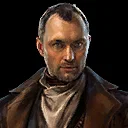
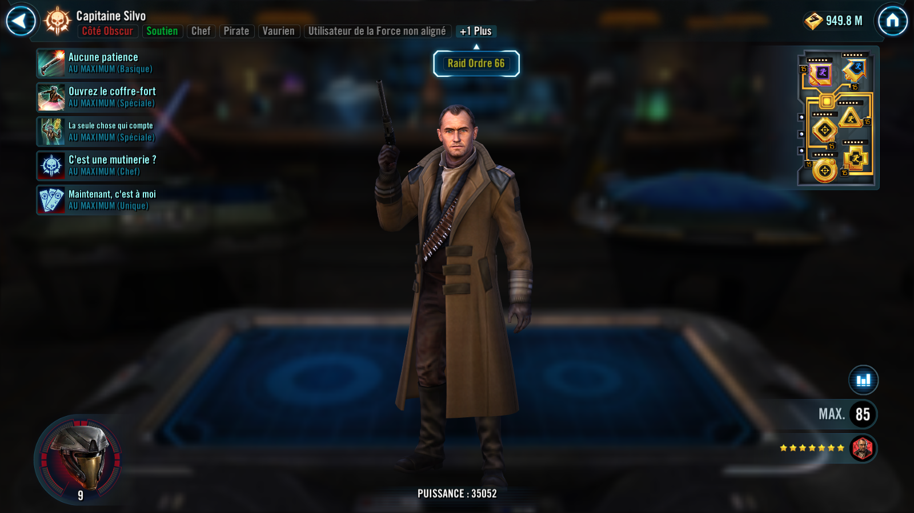
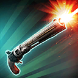
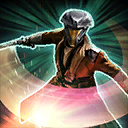

Captain Silvo
Captain Silvo is a ruthless, Force-sensitive pirate who commands a cunning crew during the New Republic era

Captain Silvo is a ruthless, Force-sensitive pirate who commands a cunning crew during the New Republic era


Deal Special damage to target enemy and inflict them with Evasion Down for 1 turn. If the enemy was Staggered at the start of this ability, Silvo gains Turn Meter equal to the amount removed from the enemy. If the ally in the Leader slot is Pirate King Hondo Ohnaka, all Pirate allies recover 10% Health and Protection.

Deal Special damage to target enemy and Stagger them for 1 turn. Silvo gains Alert for 2 turns and all other Pirate allies gain Speed Up for 1 turn. If Captain Silvo or Pirate King Hondo Ohnaka is the ally in the Leader slot, Attacker Pirate allies gain Frenzy for 2 turns. Additionally, If Pirate King Hondo Ohnaka is the ally in the Leader slot, all Pirate allies gain a stack of Profit.
Remove all Turn Meter from target enemy and all other Pirate allies gain Turn Meter equal to the amount removed. Reduce Max Health of the target enemy by 10% (stacking) and Pirate allies gain 10% Max Health (stacking) for the rest of the encounter.
Steal all Heal Over Time and Protection Over Time from all enemies, reset their duration, and grant them to all Pirate allies. Whenever Pirate King Hondo Ohnaka is the ally in the Leader slot, inflict all enemies with Health Steal Down for 2 turns. If no buffs were stolen, Pirate allies gain Health Steal Up for 2 turns. This ability can't be evaded or resisted.
Whenever Pirate allies ends their turn without a stack of Profit, they gain a stack of Ferocity for 1 turn. Pirate allies have +50% Health Steal. While Captain Silvo is active, whenever a Pirate ally starts their turn with more stacks of Profit than Captain Silvo, they recover 25% Health and Protection and gain 50% Offense until the end of their turn. Whenever Captain Silvo assists another Pirate ally, that Pirate Steals a stack of Profit from him. While Silvo has Profit, he has -10% Defense, while he has no Profit he has +10% Evasion.
At the start of Captain Silvo's turn, if Brutus has more stacks of Profit than Silvo, Silvo is inflicted with Evasion Down for 1 turn. While Silvo has Evasion Up or Evasion Down, he has +125% Evasion. While Silvo has Heal Over Time or Protection Over Time, he has +200% Tenacity. While he has Health Steal Up, he has +100% Potency. Whenever a Pirate ally gains a stack of Profit, they recover 10% Health. If they were already at full Health, they recover 10% Protection instead.
Whenever Pirate King Hondo Ohnaka is the ally in the Leader slot, Pirate allies gain 100% Defense and Defense Penetration and 50 Speed for 3 turns at the start of encounter. Whenever Silvo loses a stack of Profit, he Stealths for 1 turn. If Pirate King Hondo Ohnaka or Maz Kanata is the ally in the Leader slot, the cap for Profit is removed for Captain Silvo.
Omicron Boost : While in Grand Arenas: Whenever an enemy with bonus Protection, Protection Up, or Shield Up attacks out of turn they lose 10% of their Max Protection. Whenever an enemy gains Protection Up, they are Exposed for 1 turn. Whenever an enemy loses Turn Meter, all Pirate allies recover 25% Health and Protection and gain 1 stack of Profit.
Whenever Pirate allies gain Protection Up, they also gain 5% Turn Meter. Whenever Pirate King Hondo Ohnaka is the ally in the Leader slot, the first time any Pirate ally is defeated, if they had a stack of Profit they revive with 100% Health and Protection.